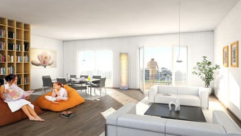

2017

Living și dining modern
Cameră de mansardă

Zonă de living
În această secțiune, veți descoperi o selecție de
lucrări reprezentative, fiecare proiect reflectând pasiunea, creativitatea și atenția la detalii pe care
le investesc în fiecare design de casă. Specializată exclusiv în proiecte rezidențiale, îmi dedic
eforturile pentru a crea locuințe care să inspire și să ofere confort. De la case moderne la reședințe
clasice, fiecare imagine este o mărturie a angajamentului meu de a transforma viziuni în realitate. Sper
ca aceste proiecte să vă inspire și să vă ofere o privire în profunzimea muncii mele ca arhitectă.
Living și dining modern
Cameră de mansardă
Zonă de living
Anul 2017 a fost marcat de realizări arhitecturale
deosebite, fiecare proiect reflectând inovație și excelență în design. Printre aceste proiecte se numără
dezvoltarea de reședințe sustenabile, clădiri comerciale de ultimă generație, inițiative de reabilitare
urbană și interioare de lux pentru hoteluri. Fiecare lucrare a fost realizată cu o atenție meticuloasă la
detalii, îmbinând funcționalitatea cu estetica și contribuind la îmbunătățirea calității vieții pentru
utilizatori.
Casă modernă
Bucătărie
Toaletă modernă
În 2019, am lucrat la o serie de proiecte arhitecturale impresionante care au evidențiat inovația și
creativitatea mea în domeniu. Printre acestea se numără Casa Zen, un spațiu rezidențial minimalist ce îmbină
armonios influențele japoneze și scandinave, oferind o atmosferă de liniște și echilibru. Un alt proiect
notabil este EcoVillage, un complex rezidențial sustenabil, proiectat pentru a promova comunitatea și a
reduce impactul ecologic prin utilizarea panourilor solare și a grădinilor verticale.
Toaletă modernă
Living spațios
Toaletă
În ciuda provocărilor aduse de pandemie, sectorul designului
interior și arhitecturii a demonstrat o capacitate remarcabilă de adaptare și inovare. Proiectele au evoluat
pentru a răspunde noilor nevoi și preferințe ale clienților, punând accent pe flexibilitate, sustenabilitate
și bunăstare.Cu mulți oameni lucrând de acasă, proiectele de design interior au început să includă soluții
inovatoare pentru birouri de acasă. Spațiile de lucru ergonomice, bine iluminate și confortabile au devenit
esențiale.

AI Website Maker
Pentru mai multe informații:
sofiapopescuarhitect@yahoo.com